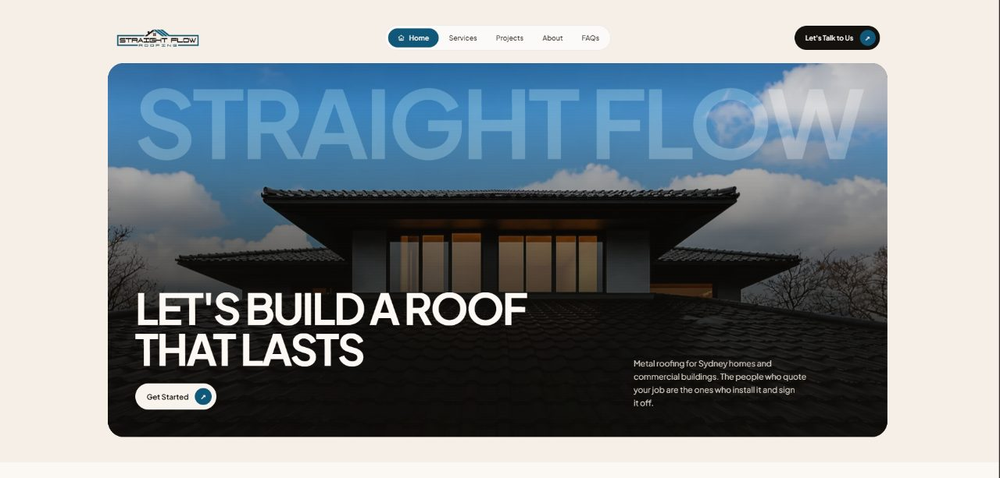

Roofing website design in Christchurch: the rebuild, nor'westers and roof maintenance
Many Christchurch roofs were replaced after the earthquakes. A decade and more later, those roofs need maintenance, and homeowners are looking for roofers they can trust.

Christchurch roofing websites should speak to homeowners whose roofs were replaced during the rebuild and now need maintenance. Pages for inspections, repainting, spouting and wind damage, area pages that include Rolleston and Rangiora, and clear LBP details cover what most people search for. Keep the call button visible on mobile.
The Canterbury earthquakes in 2010 and 2011 changed Christchurch's roofs. Thousands of brick chimneys came down, and many heavy tile roofs were replaced with lightweight long-run steel during the repairs and rebuild that followed. Whole new suburbs went up in Halswell, Wigram and out in Selwyn and Waimakariri.
Many of those roofs are now well over ten years old. They need inspections, spouting work, repainting and repairs. That is a steady market, and the website is how many homeowners find a roofer for it.
01Who is searching for a roofer in Christchurch now?
Many Christchurch homeowners have not had to think about their roof. It was replaced during the rebuild, often arranged through insurance, and it has not caused trouble since. Now they notice fading, rust spots around fixings, or spouting that overflows in heavy rain, and they are not sure who to call.
Your site can help them with plain pages on the things they are noticing:
- Roof inspections and maintenance for long-run steel roofs.
- Roof painting and recoating.
- Spouting and downpipe repairs and replacement.
- Repairs to flashings and penetrations around skylights, flues and solar panels.
Many of these owners bought after the rebuild and have no paperwork for the roof at all. A plain page explaining what an inspection covers, and what you send them afterwards, can be enough to win the job.
Some homeowners also want to know whether rebuild-era work was done properly. If you offer inspections that check for that, say so clearly and explain what you look at.
02Nor'westers and Canterbury weather
The hot, dry nor'west wind is part of life in Canterbury, and strong ones lift iron, damage ridging and bring down trees. Storm damage to ridges and flashings is common after a strong nor'wester. Winters bring frosts and the occasional snowfall.
A wind damage page is worth having. Explain what you check after a big nor'wester, how to make a roof safe, and what to photograph for an insurer. Keep the call button visible on mobile, because many of those visitors are standing in their backyard looking up at a lifted sheet.
Snow is less common, but when it falls it tends to find the weak points in older spouting and lightweight verandah roofs. A short note on snow and frost damage, with what to check afterwards, is enough.
03Which areas should a Christchurch roofing site cover?
Christchurch has spread west and north since the earthquakes, and towns in Selwyn and Waimakariri are now part of the same market. Group your pages accordingly:
- Central and inner suburbs: Merivale, St Albans, Riccarton, Sydenham.
- Northern suburbs: Papanui, Bishopdale, Burnside, Casebrook.
- Hills and eastern suburbs: Cashmere, Mt Pleasant, Sumner, Redcliffs. Steep access and coastal exposure.
- South-west: Halswell, Wigram, Hornby.
- Selwyn and Waimakariri: Rolleston, Lincoln, Rangiora, Kaiapoi.

04What Christchurch roofing sites get wrong
- Still talking mostly about earthquake repairs, when the market has moved to maintenance.
- No pages for Rolleston, Rangiora and the other growth towns where a lot of homes now sit.
- Missing LBP details.
- Stock photos instead of local jobs.
- No clear explanation of what an inspection includes or costs.
05Common questions
My business grew during the rebuild. How should my site change now?
Shift the focus to maintenance, inspections and repairs on the roofs that were replaced. Keep a short page on your rebuild experience, because it still builds trust, but lead with what homeowners need today.
Do I need separate pages for Rolleston and Rangiora?
If you do regular work there, yes. Those towns have grown quickly, and people search for roofers by town name. A separate page with a real job from each town is more useful than a line in a list of areas.
How often should a long-run steel roof be inspected?
Once every few years suits most homes, and check again after a big wind event. Coastal homes in Sumner or New Brighton may need it more often. Write the interval on the page, along with what the inspection covers, so owners know what they are booking.
Is roof painting worth a page of its own?
Yes. Many rebuild-era roofs are starting to fade, and owners search for repainting as a separate job. Show the colours you offer and a few before and after photos. Say how long a repaint takes and what preparation it includes.
What should I say about rebuild-era work?
Keep it factual. Explain what you check during an inspection and what you have found on other jobs, without criticising other contractors by name. A factual page builds more trust than a comparison with other roofers, and it avoids a dispute you do not need.
If your Christchurch roofing site still reads like it was written in 2014, send a short brief and I will tell you what I would change first. The Wellington guide covers a city with a similar earthquake story and stronger winds.